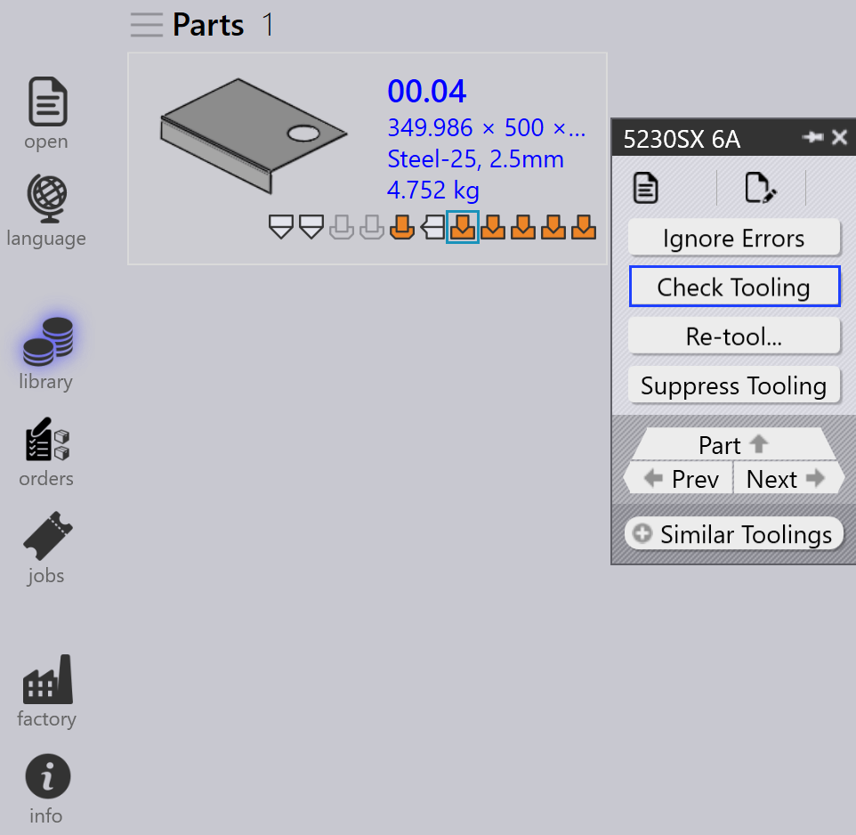
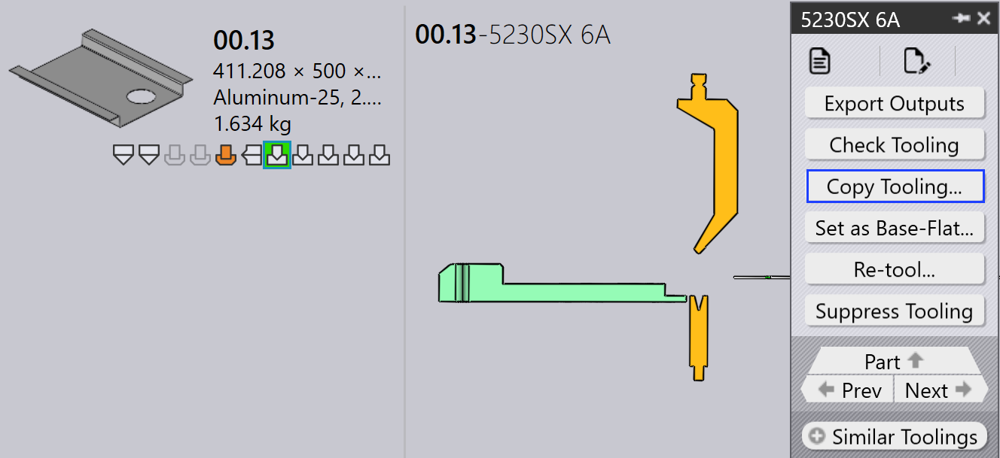

Szerszámozási panel
Ez a szakasz elmagyarázza a szerszámozással kapcsolatos műveleteket, mint például a Kimenetek exportálása, Check Tooling, Felszerszámozás elrejtése, Beállítás alap lapos felületként…, Felszerszámozás másolása…, és más beállításokat, amelyek a szerszámozási példányok kezeléséhez használatosak.

|
|


Kimenetek exportálása
Ez a beállítás exportálja az alkatrész kimenetet a Gyári beállítások beállításokban megadott célhelyre. (Lásd Bend Settings és Cut Settings)

Csak a kiválasztott szerszámozási művelethez kapcsolódó szerszámozások kerülnek exportálásra, nem a teljes alkatrész.
| Az exportált fájlok a művelet típusától függenek. Hajlítási és hajtogatási műveleteknél NC fájlok és jelentések generálódnak. Vágási és lyukasztási műveleteknél csak az alkatrész fájlok kerülnek exportálásra. |
Check Tooling
-
Ha változás történik a CAM beállításokban, vagy egy hajlító szerszám elveszik, nincs szükség az alkatrész újraszerszámozására.
-
Helyette használja a Check Tooling opciót a meglévő szerszámozás ellenőrzéséhez módosítások nélkül.
-
Ha az ellenőrzés sikertelen, az adott példány szerszámozási állapota frissül, és a kapcsolódó kimeneti fájlok törlésre kerülnek.
-
A Check Tooling észleli azokat az alkatrészeket is, ahol a hibák korábban manuálisan felülbírálásra kerültek a Hibák figyelmen kívül hagyása használatával, és frissíti állapotukat hibaállapotra, ha szükséges.

Felszerszámozás másolása…
A szerszámozás másolás lehetővé teszi, hogy gyorsan alkalmazza a hajlító szerszámozást egyik megoldásról másokra, időt és erőfeszítést takarítva meg.
Ez átmásolja az ütőbélyeget, sorrendet és hátsó ütköző beállítást egy kiválasztott referencia szerszámozásból (megoldás), és megpróbálja ugyanazt a beállítást alkalmazni minden más megoldásra.
-
Ha a másolt beállítás megvalósítható egy célgépre, elmentésre és használatra kerül.
-
Ha a beállítás nem megvalósítható, az adott gép eredeti szerszámozása változatlan marad.
Például, különböző szerszámozása lehet különböző gépekhez:
-
Itt a Machine 5230SX 6A Gooseneck ütőbélyeget használ, a Machine 5085X 6A B23 Pointed ütőbélyeget használ.

Amikor használja a Felszerszámozás másolása… opciót a Machine 5230SX 6A gépen, megpróbálja a Gooseneck beállítást másolni minden más gépre.

Ugyanazt az ütőbélyeget, sorrendet és hátsó ütköző beállításokat alkalmazza, ahol lehetőséges. Ha a másolt beállítás nem használható, az eredeti szerszámozás változatlan marad.

A szerszámozás másolás alkalmazása után a Gooseneck beállítás sikeresen alkalmazásra került minden más gépre, ahol megvalósítható.
Beállítás alap lapos felületként…
A Beállítás alap lapos felületként… funkció meghatározza, hogy melyik hajlítási vagy hajtogatási szerszámozás legyen használva referencia sík méretként a vágási megoldások generálásához. Amikor egy szerszámozás Base-Flat-ként van megjelölve, a TruSmartCAM frissíti az alkatrész sík méretét az adott gép alapján, és ennek megfelelően újragenerálja a vágási megoldásokat. A Base-Flat szerszámozások kék kerettel jelennek meg a felhasználói felületen.
A különböző hajlító gépek kis eltéréseket okozhatnak a sík méretben ugyanazon alkatrésznél. Amikor beállít egy szerszámozást Base-Flat-ként, a TruSmartCAM az adott gép sík méretét használja fő referenciaként, és automatikusan újraszámolja a vágási megoldásokat.
Itt láthatunk különböző sík méreteket ugyanazon alkatrészhez különböző gépeken:

Ebben a példában a 5130X 6A B23 szerszámozás van beállítva Base-Flat-ként, és a frissített sík méret alkalmazásra kerül az alkatrész tulajdonságokban:

Automatikus base flat kiválasztás
Amikor a gyár beállítás Sima korrekció alkalmazása hajlítás közben engedélyezve van:

-
A TruSmartCAM automatikusan beállítja a hajlító szerszámozást (amely tartalmazza a maximális hajlítási hossz táblázatot) Base-Flat-ként az alkatrész importálása során.
-
Ha a kiválasztott hajlító szerszámozás hibát észlel, vagy nem megvalósítható, a TruSmartCAM intelligensen átkapcsol és beállít egy másik érvényes hajlító szerszámozást Base-Flat-ként. Ez biztosítja, hogy a sík méret referencia és a vágási megoldások mindig konzisztensek és érvényesek maradjanak manuális beavatkozás nélkül.
Továbbfejlesztett base flat kezelés
A TruSmartCAM Base-Flat beállításokat biztosít a Mentés a Praxis-ba párbeszédablakban hajlítási vagy hajtogatási szerszámozás szerkesztések mentésekor. Ezek a beállítások csak OK állapotú szerszámozásoknál jelennek meg, és biztosítják, hogy a sík méret és vágási megoldások pontosak maradjanak.
Beállítás alap lapos felületként és vágóprogram kiszámítása
Ez a beállítás használatos egy szerszámozás Base-Flat-ként való megjelöléséhez először, és automatikusan generálja a megfelelő vágási megoldást.
Megjelenik, amikor:
-
A szerszámozás jelenleg nincs Base-Flat-ként megjelölve.
-
A felhasználó kiadta szerkesztésre a szerszámozást, és menti a módosításokat.

Ennek a beállításnak a használatához adja ki szerkesztésre a hajlítási vagy hajtogatási szerszámozást, és végezze el a szükséges módosításokat, mint például hajlítási paraméterek vagy sík méret változtatásait. Nyomja meg a Ctrl+S billentyűket a módosítások mentéséhez. A Mentés a Praxis-ba párbeszédablakban válassza a Beállítás alap lapos felületként és vágóprogram kiszámítása opciót, és klikkeljen az OK gombra. A TruSmartCAM beállítja a szerszámozást Base-Flat-ként, és generálja a vágási megoldást a frissített sík méret használatával.
Alap lapos felület frissítése és vágóprogram újraszámítása
Ez a beállítás akkor használatos, amikor a szerszámozás már Base-Flat-ként van megjelölve, és szerkesztésre került, így a sík méretet és vágási megoldásokat újra kell generálni.
Megjelenik, amikor:
-
A szerszámozás már Base-Flat-ként van megjelölve.
-
A felhasználó kiadta szerkesztésre, szerkesztette, és menti a módosításokat.

A meglévő Base-Flat szerszámozás szerkesztésekor frissítse a hajlítási paramétereket vagy sík méret geometriát, ahogy szükséges. A Mentés a Praxis-ba párbeszédablakban válassza a Alap lapos felület frissítése és vágóprogram újraszámítása opciót. A TruSmartCAM ezután frissíti a Base-Flat szerszámozást, és újragenerálja az összes kapcsolódó vágási megoldást, hogy tükrözze a legújabb módosításokat.
|
Egyszerre csak egy hajlító szerszámozás állítható be Base-Flat-ként. Amikor a Base-Flat megváltozik, a meglévő vágási megoldások automatikusan újrafeldolgozásra kerülnek. Ez a funkció hajlítási és hajtogatási szerszámozásoknál egyaránt elérhető a TruSmartCAM-ben. |
Újbóli felszerszámozás…
Ez a beállítás újrafeldolgozza a kiválasztott szerszámozást az alkatrészhez.
Klikkeljen jobb gombbal a szükséges szerszámozásra a Tooling panelen, és klikkeljen a Újbóli felszerszámozás… opcióra.

Megerősítő párbeszédablak jelenik meg a folytatás előtt.

Klikkeljen az igen gombra az újraszerszámozás folytatásához, vagy a nem gombra a művelet megszakításához.
Csak a kiválasztott szerszámozás kerül újraszerszámozásra. Az alkatrészhez kapcsolódó más szerszámozások nem érintettek. A kiválasztott szerszámozáshoz kapcsolódó meglévő kimenetek törlésre és újragenerálásra kerülnek az újraszerszámozási folyamat során.
Használja ezt az opciót, amikor a szerszámozási adatok elavultak, helytelenek, vagy amikor változások történnek a gép vagy szerszámozási konfigurációkban.
Hibák figyelmen kívül hagyása
-
Ha egy szerszámozott példány figyelmeztetést mutat, és Ön mégis folytatni szeretné, felülbírálhatja a figyelmeztetést a Hibák figyelmen kívül hagyása opcióra kattintva.

-
Ez lehetővé teszi a rendszer számára, hogy exportálja a kimeneti fájlokat az adott példányhoz, még akkor is, ha szerszámozási problémák voltak.
| A Ignore Errors opciót csak akkor használja, ha biztos benne, hogy a figyelmeztetés biztonságosan figyelmen kívül hagyható. A tényleges hibák felülbírálása gépi károsodáshoz vagy biztonsági kockázatokhoz vezethet. |
Szerszámozás elrejtése/visszaállítása
-
Amikor egy gép inaktív, vagy nem szeretné, hogy egy konkrét alkatrész egy adott gépen feldolgozásra kerüljön, használja a Felszerszámozás elrejtése opciót, hogy kizárja az alkatrészt az adott gépen való fészkeltésből.

-
Az elrejtés után az egér a szerszámozott példány fölé helyezésekor egy üzenet jelenik meg: "Tooling suppressed by <User name> on <Date Time>".
-
A szerszámozás elrejtése eltávolítja a kimeneti fájlt az adott géphez és alkatrészhez.
-
Használja az Felszerszámozás elrejtésnének megszüntetése opciót a szerszámozási állapot visszaállításához az alkatrészhez az adott gépen.

-
Amikor visszaállításra kerül, a megfelelő kimeneti fájl újra generálódik.